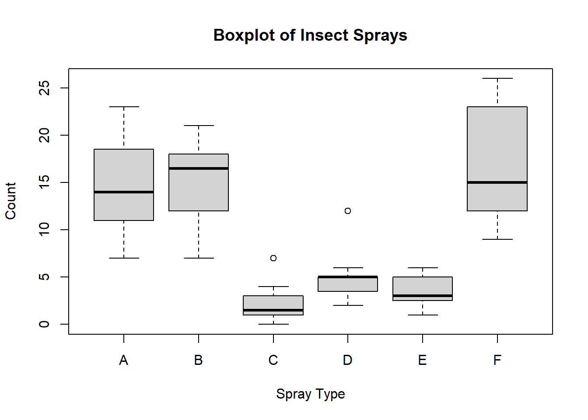

3.2 Graphical Measures
The following table summarizes key graphical measures along with guidance on when and why to use each. More detailed explanations, visual examples, and sample code will be discussed after this table.
| Graph Type | When to Use | Why It's Useful |
|---|---|---|
| Histogram | - Exploring the distribution (shape, center, spread) of a single continuous variable | - Quickly identifies frequency, modes, skewness, and potential outliers - Provides an overview of data "shape" |
| Box-and-Whisker Plot | - Comparing the same continuous variable across multiple categories - Identifying median, IQR, and outliers |
- Shows distribution at a glance (median, quartiles) - Highlights outliers and potential group differences |
| Stem-and-Leaf Plot | - Small, single-variable datasets where you want a textual yet visual distribution view | - Reveals the distribution while preserving actual data values - Easy to spot clusters and gaps for small datasets |
| Notched Boxplot | - Similar to a standard boxplot but with confidence intervals around the median | - If notches don't overlap, it suggests the medians differ significantly - Helps clarify whether differences in medians are likely meaningful |
| Bagplot (2D Boxplot) | - Bivariate data where you want a 2D "boxplot"-style overview - Identifying outliers in two-dimensional space |
- Depicts both central region ("bag") and potential outliers - Ideal for discovering clusters or unusual points in two continuous variables |
| Boxplot Matrix | - Multiple continuous variables that you want to compare side-by-side | - Quickly compares distributions of many variables simultaneously - Helpful for spotting differences in median, spread, and outliers |
| Violin Plot | - Same use case as boxplot but you want more detail on the distribution's shape | - Combines boxplot features with a density plot - Shows where data are concentrated or sparse within each category |
| Scatterplot | - Two continuous variables to check for relationships, trends, or outliers | - Visualizes correlation or non-linear patterns - Aids in identifying clusters or extreme values |
| Pairwise Scatterplots | - Initial exploration of several variables at once | - Enables a quick scan of relationships between all variable pairs - Useful for identifying multivariate patterns or potential correlation structures |
Tips for Selecting the Right Plot:
Focus on Your Question: Are you comparing groups, investigating correlations, or just exploring the overall shape of the data?
Match the Plot to Your Data Type: Continuous vs. categorical data often dictates your choice of chart.
Mind the Data Size: Some plots become cluttered or lose clarity with very large datasets (e.g., stem-and-leaf), while others may be less informative with very few data points.
3.2.1 Shape
Properly labeling your graphs is essential to ensure that viewers can easily understand the data presented. Below are several examples of graphical measures used to assess the shape of a dataset.
# Generate random data for demonstration purposes
data <- rnorm(100)
# Histogram: A graphical representation of the distribution of a dataset.
hist(
data,
labels = TRUE,
col = "grey",
breaks = 12,
main = "Histogram of Random Data",
xlab = "Value",
ylab = "Frequency"
)
# Interactive Histogram: Using 'highcharter' for a more interactive visualization.
# pacman::p_load("highcharter")
# hchart(data, type = "column", name = "Random Data Distribution")
# Box-and-Whisker Plot: Useful for visualizing the distribution and identifying outliers.
boxplot(
count ~ spray,
data = InsectSprays,
col = "lightgray",
main = "Boxplot of Insect Sprays",
xlab = "Spray Type",
ylab = "Count"
)
# Notched Boxplot: The notches indicate a confidence interval around the median.
boxplot(
len ~ supp * dose,
data = ToothGrowth,
notch = TRUE,
col = c("gold", "darkgreen"),
main = "Tooth Growth by Supplement and Dose",
xlab = "Supplement and Dose",
ylab = "Length"
)
# If the notches of two boxes do not overlap, this suggests that the medians differ significantly.
# Stem-and-Leaf Plot: Provides a quick way to visualize the distribution of data.
stem(data)
#>
#> The decimal point is at the |
#>
#> -2 | 4321000
#> -1 | 87665
#> -1 | 44433222111000
#> -0 | 998888886666665555
#> -0 | 433322221100
#> 0 | 0112233333344
#> 0 | 5666677888999999
#> 1 | 0111122344
#> 1 | 699
#> 2 | 34
# Bagplot - A 2D Boxplot Extension: Visualizes the spread and identifies outliers in two-dimensional data.
pacman::p_load(aplpack)
attach(mtcars)
bagplot(wt,
mpg,
xlab = "Car Weight",
ylab = "Miles Per Gallon",
main = "Bagplot of Car Weight vs. Miles Per Gallon")
Below are some advanced plot types that can provide deeper insights into data:
# boxplot.matrix(): Creates boxplots for each column in a matrix. Useful for comparing multiple variables.
graphics::boxplot.matrix(
cbind(
Uni05 = (1:100) / 21,
Norm = rnorm(100),
T5 = rt(100, df = 5),
Gam2 = rgamma(100, shape = 2)
),
main = "Boxplot Marix",
notch = TRUE,
col = 1:4
)
# Violin Plot (vioplot()): Combines a boxplot with a density plot, providing more information about the distribution.
library("vioplot")
vioplot(data, col = "lightblue", main = "Violin Plot Example")
3.2.2 Scatterplot
Scatterplots are useful for visualizing relationships between two continuous variables. They help identify patterns, correlations, and outliers.
Pairwise Scatterplots: Visualizes relationships between all pairs of variables in a dataset. This is especially useful for exploring potential correlations.